信息技术经济学：系统竞争、锁定与双边市场
信息产品的成本结构（高固定成本、近零边际成本）、互补品与系统竞争、锁定与转换成本、网络外部性、双边市场与平台定价，以及版权与知识共享的权衡。
本讲要点
- 高固定成本/低边际成本
- 互补品与系统
- 锁定与转换成本
- 网络外部性
- 双边市场
- 版权保护 vs 共享
最后一讲：信息技术的经济学（Information Technology）。
这一讲不像前面几讲那样围绕「一个市场」展开，而是围绕信息产品的四个特殊结构展开：
幻灯片原文 / 板书
Information Technology
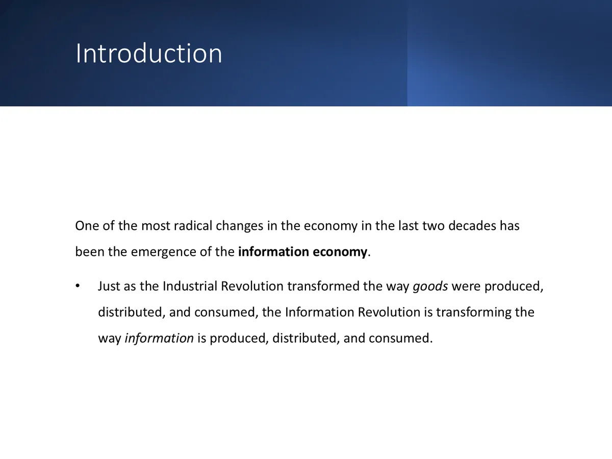
开场给出历史定位：
过去二十年经济中最剧烈的变化之一，是信息经济的出现。
类比很关键：工业革命改变了商品「如何生产、分销、消费」；信息革命正在改变信息「如何生产、分销、消费」。
这句话定下了本讲的调子：我们不是来学「互联网公司」的，是来学当产品的边际成本趋近于零、且价值依赖别人是否也在用时，市场会怎么运作。
幻灯片原文 / 板书
Introduction --- One of the most radical changes in the economy in the last two decades has been the emergence of the information economy. Just as the Industrial Revolution transformed the way goods were produced, distributed, and consumed, the Information Revolution is transforming the way information is produced, distributed, and consumed.
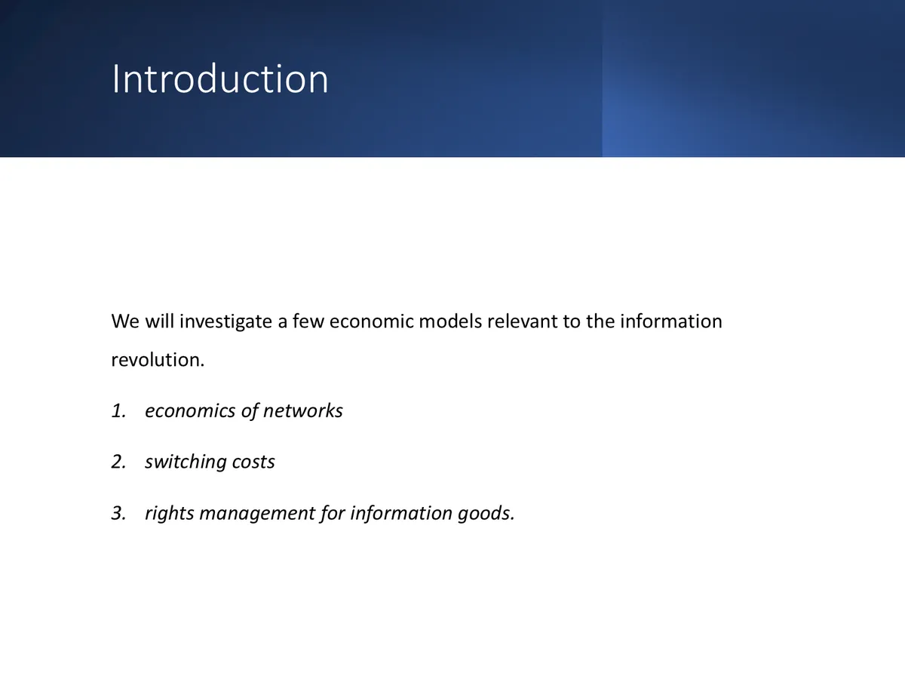
本讲只研究三个模型（路线图）：
- 网络的经济学（economics of networks）——互补品、锁定、网络外部性、双边市场。
- 转换成本（switching costs）——为什么用户被「锁住」。
- 信息产品的权利管理（rights management）——卖、租、试用、共享怎么选。
三个模型对应三种「市场失灵的形式」，也对应三种商业策略。
幻灯片原文 / 板书
Introduction --- We will investigate a few economic models relevant to the information revolution. economics of networks switching costs rights management for information goods.
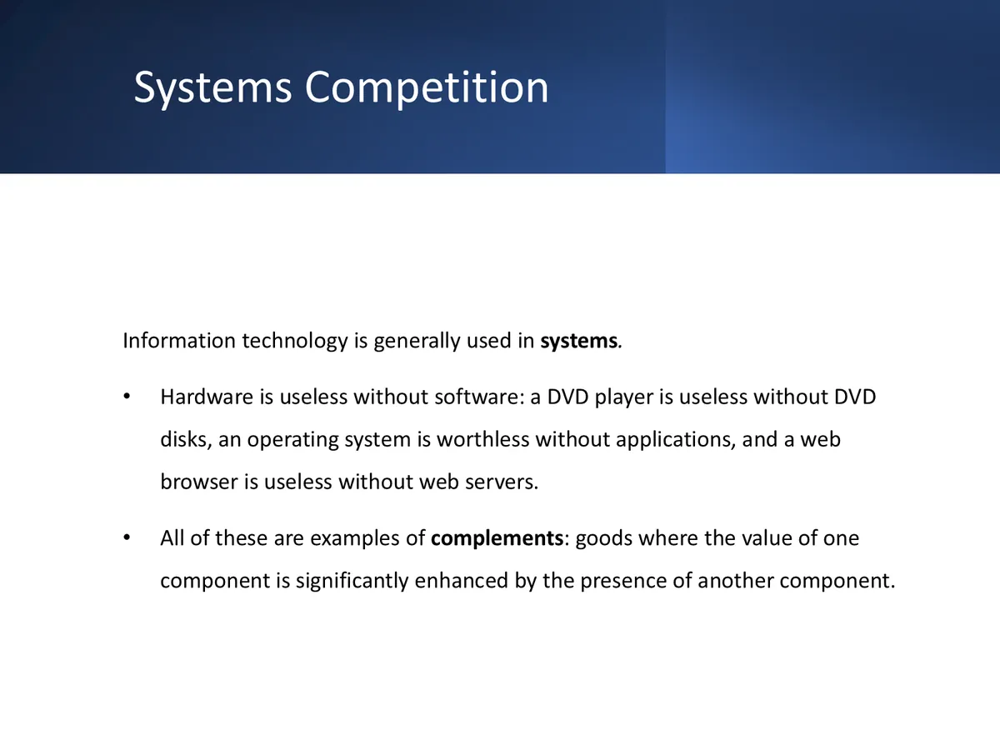
系统竞争（Systems Competition）。
第一个观察：信息技术产品总是以「系统」的形式被使用。
- 硬件离开软件就没用：DVD 播放机离开碟片毫无价值，操作系统离开应用程序毫无价值，浏览器离开网站毫无价值。
这些就是互补品（complements）：一种组件的价值，因为另一种组件的存在而显著提高。
注意这个定义比第 3 讲的「左鞋右鞋」更进一步——它强调的是价值的相互增强。
幻灯片原文 / 板书
Systems Competition --- Information technology is generally used in systems. Hardware is useless without software: a DVD player is useless without DVD disks, an operating system is worthless without applications, and a web browser is useless without web servers. All of these are examples of complements: goods where the value of one component is significantly enhanced by the presence of another component.
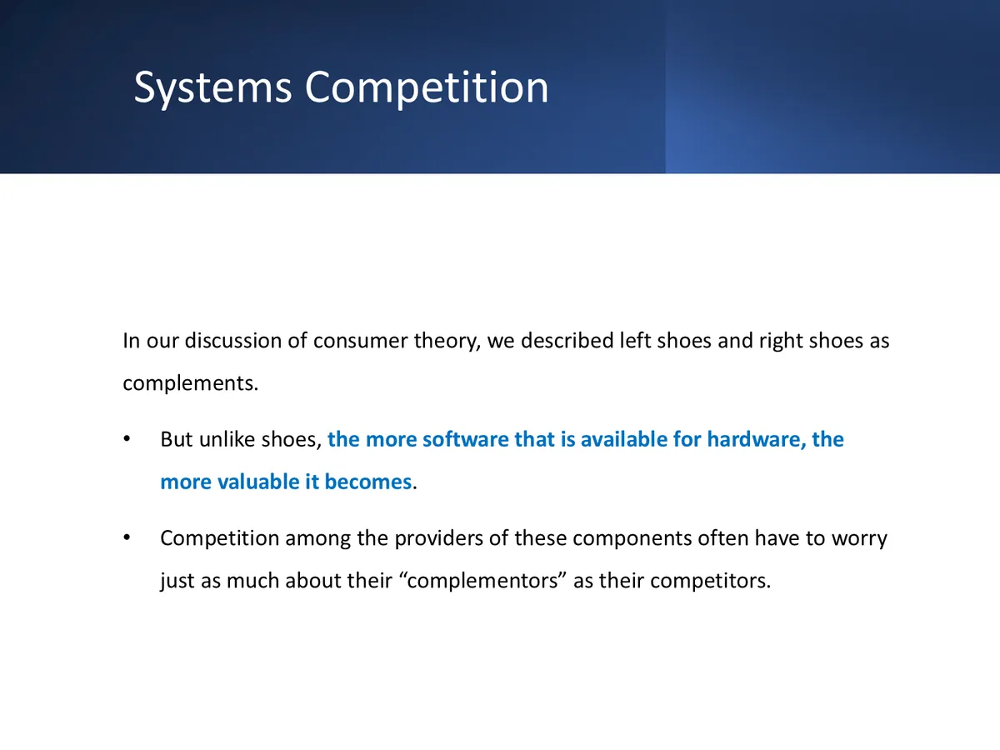
与第 3 讲的互补品做个对照：
- 左鞋和右鞋是互补品，但多买一只左鞋不会让右鞋更有价值（固定比例，1:1）。
- 而软件越多，硬件越有价值；应用越多，操作系统越有价值。
所以 IT 的互补品有正反馈：一边变多，另一边更值钱。
由此得到一个反直觉的结论：
这些组件的供应商，既要操心竞争对手，也要操心自己的「互补者」（complementors）。
因为互补者的定价会直接影响你的销量。
幻灯片原文 / 板书
Systems Competition --- In our discussion of consumer theory, we described left shoes and right shoes as complements. But unlike shoes, the more software that is available for hardware, the more valuable it becomes. Competition among the providers of these components often have to worry just as much about their “complementors” as their competitors.
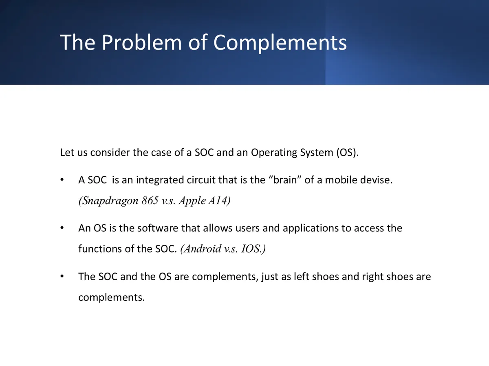
把系统具体化：SOC + 操作系统（OS）。
- SOC（System on a Chip）：集成电路，是移动设备的「大脑」。课件举例：骁龙 865（Snapdragon 865）vs 苹果 A14。
- OS：让用户和应用能够使用 SOC 功能的软件。课件举例：Android vs iOS。
二者是互补品——就像左鞋与右鞋：只买一个没用。
下面五页（7–12）是这个模型的一次完整推导，请跟着算，它只用到第 4 讲的 MR = MC。
幻灯片原文 / 板书
The Problem of Complements --- Let us consider the case of a SOC and an Operating System (OS). A SOC is an integrated circuit that is the “brain” of a mobile devise. (Snapdragon 865 v.s. Apple A14) An OS is the software that allows users and applications to access the functions of the SOC. (Android v.s. IOS.) The SOC and the OS are complements, just as left shoes and right shoes are complements.
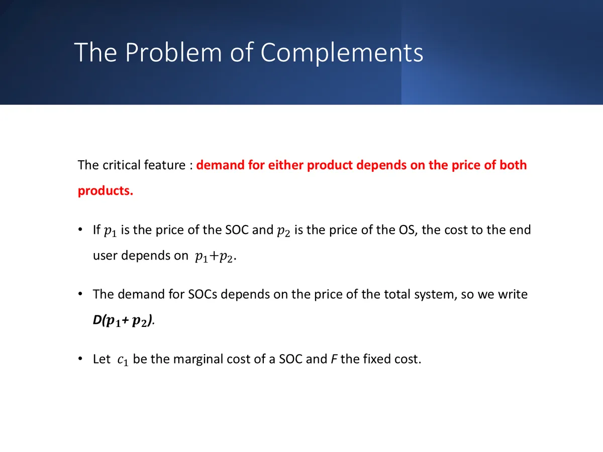
模型设定（这一页是整套推导的地基）：
- 关键特征：任一种产品的需求，都取决于两种产品的价格。
- 设 SOC 的价格为 p₁，OS 的价格为 p₂，则终端用户面对的成本取决于 p₁ + p₂。
- 因此 SOC 的需求取决于整个系统的价格，写成 D(p₁ + p₂)。
- 设 SOC 的边际成本为 c₁，固定成本为 F（OS 侧对称地有 c₂、成本）。
一句话：消费者买的不是组件，是「系统」；他只关心总价。
幻灯片原文 / 板书
The Problem of Complements
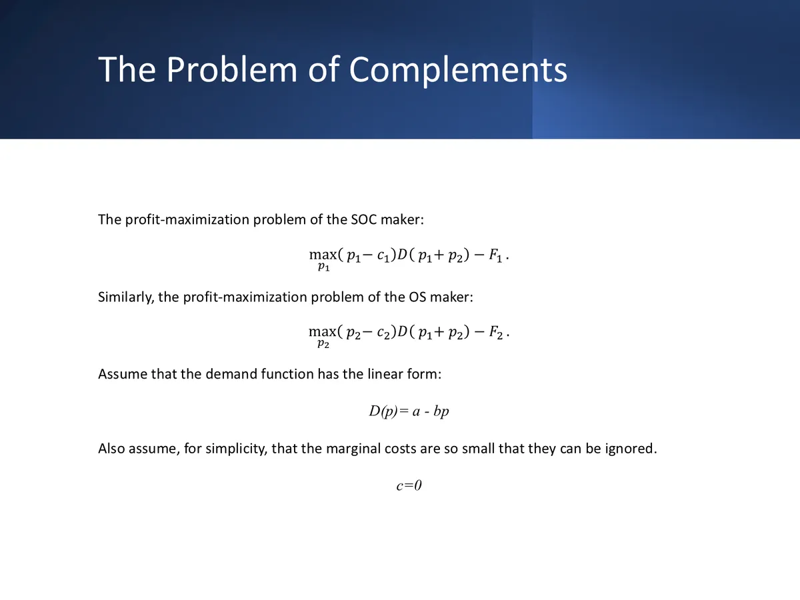
第一步：两个厂商各自独立定价。
厂商 1（SOC）的利润：
π₁ = p₁·D(p₁ + p₂) − c₁·D(p₁ + p₂) − F = (p₁ − c₁)·D(p₁ + p₂) − F
厂商 2（OS）的利润：把下标换成 2 即可。
注意两家各自只看自己的价格，但销量由总价决定——这就是冲突的来源。
幻灯片原文 / 板书
The Problem of Complements
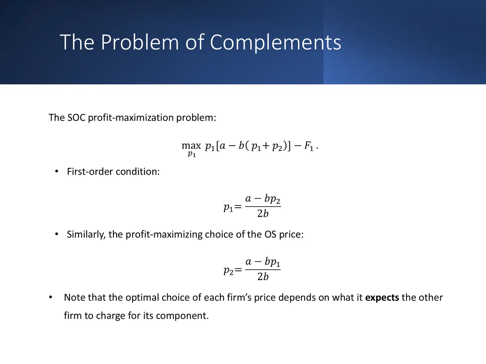
第二步：各自求一阶条件（对自家价格求导，令其为零）。
厂商 1：D + (p₁ − c₁)·D′ = 0 厂商 2：D + (p₂ − c₂)·D′ = 0
这里的 D′ < 0（需求向下倾斜）。
用文字读这两个式子：每家都只考虑「我涨价会让我少卖多少」，完全不考虑我涨价会让对方也少卖。这就是外部性。
幻灯片原文 / 板书
The Problem of Complements
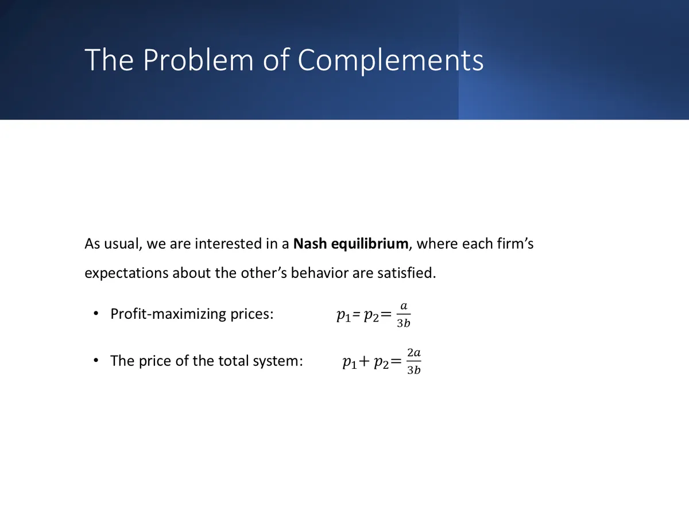
第三步：把两个一阶条件相加，记总价 P = p₁ + p₂、总边际成本 c = c₁ + c₂：
2D + (P − c)·D′ = 0
而联合利润（把两家看成一家的总利润）对 P 求导是：
D + (P − c)·D′
两者相差一个 D。因为 D > 0，所以：在各自最优的点上，联合利润还可以通过「降价」来提高。
幻灯片原文 / 板书
The Problem of Complements
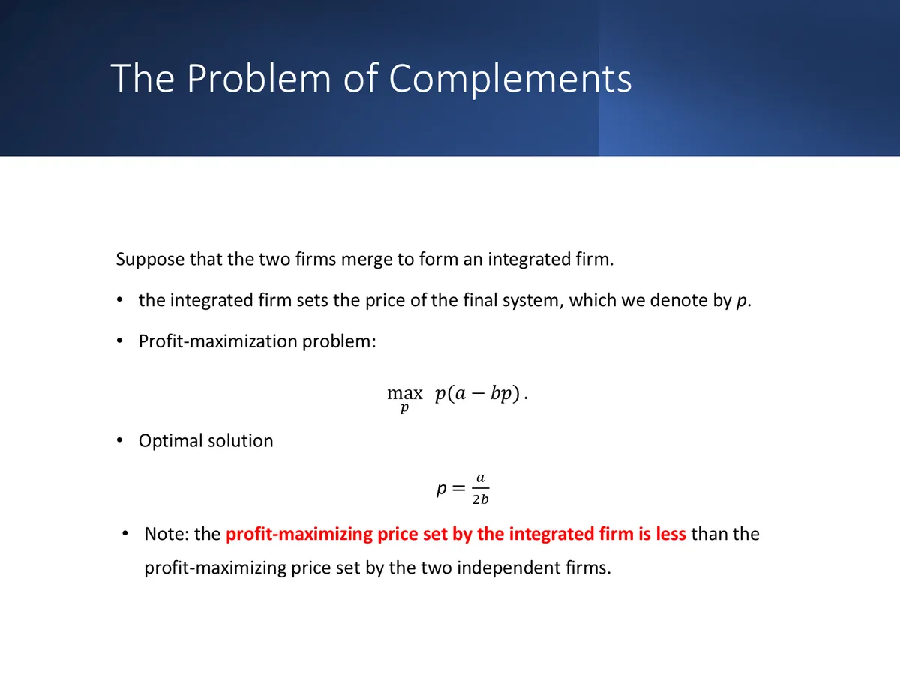
第四步：如果两家合并（或由一家做系统定价）会怎样？
一体化厂商的利润：π = (P − c₁ − c₂)·D(P) − F，一阶条件：
D + (P − c)·D′ = 0
对比第 10 页的 2D + (P − c)·D′ = 0：独立定价时，均衡总价 P 高于一体化时的最优总价。
直觉：每家涨价时只承担「自己少卖」的损失，却把「对方也少卖」的损失甩给了对方——于是每家都涨得太多。
幻灯片原文 / 板书
The Problem of Complements
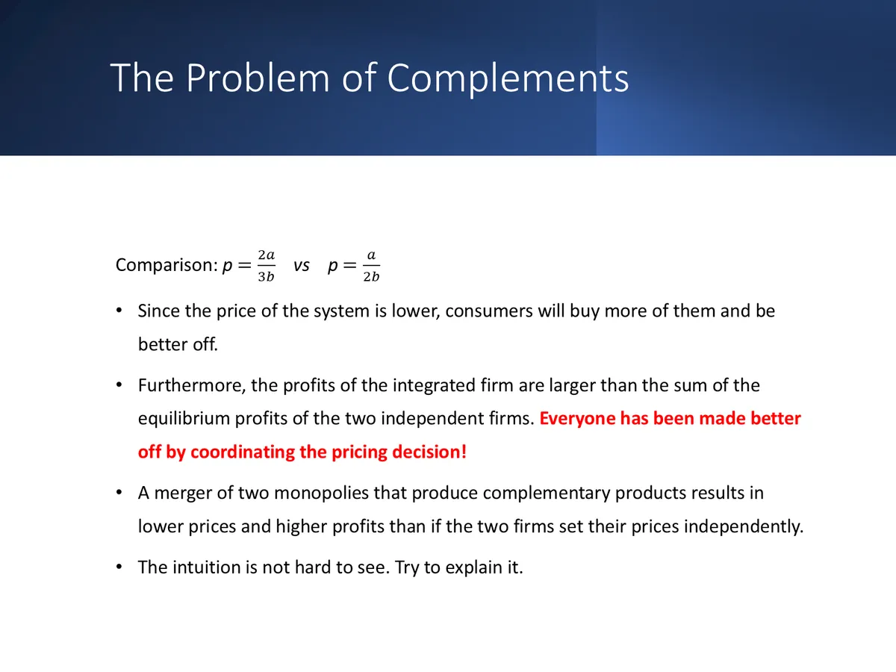
这就是双重边际化（double marginalization）：同一条产业链上，上游加一次价、下游再加一次价，总加价超过垄断加价。
后果是三方受损：
- 总销量更低；
- 行业总利润更低（两家加起来还不如合并）；
- 消费者更糟（价格更高）。
这个结论可以背成一句：互补品的独立定价 = 互相收对方的税。
幻灯片原文 / 板书
The Problem of Complements
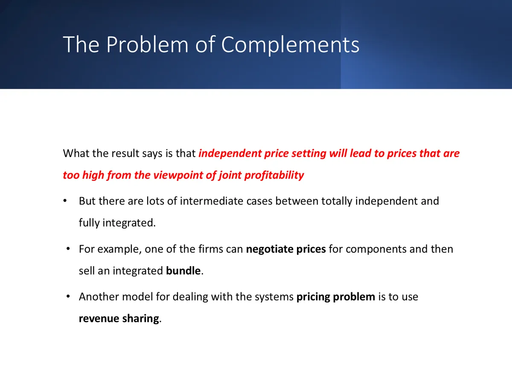
课件把结论说得非常直白：
独立定价会导致从共同利润的角度看「太高」的价格。
但现实不是二选一（完全独立 vs 完全一体化），中间有大量形态：
- 一家厂商替双方谈价，然后卖整合后的捆绑包（integrated bundle）；
- 收益分成（revenue sharing）。
下一页开始就是这两条的实例。
幻灯片原文 / 板书
The Problem of Complements --- What the result says is that independent price setting will lead to prices that are too high from the viewpoint of joint profitability But there are lots of intermediate cases between totally independent and fully integrated. For example, one of the firms can negotiate prices for components and then sell an integrated bundle. Another model for dealing with the systems pricing problem is to use revenue sharing.
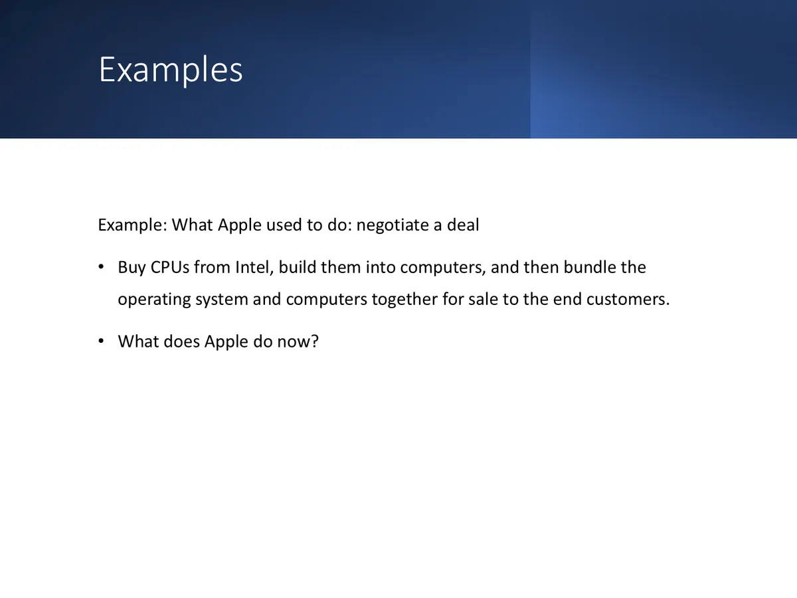
例子一：Apple 的老做法——谈一笔交易。
Apple 当年：向 Intel 买 CPU，装进自己的电脑，再把操作系统与电脑打包卖给终端消费者。
这在模型里就是「一家替双方谈价 + 捆绑」：Apple 同时决定了系统两半的价格，于是消除了双重边际化——因为它内部化了互补品之间的外部性。
课件追问一句：Apple 现在在做什么？（自研芯片 → 把 SOC 也纳入体内，把「互补者」变成「自己」）
幻灯片原文 / 板书
Examples --- Example: What Apple used to do: negotiate a deal Buy CPUs from Intel, build them into computers, and then bundle the operating system and computers together for sale to the end customers. What does Apple do now?
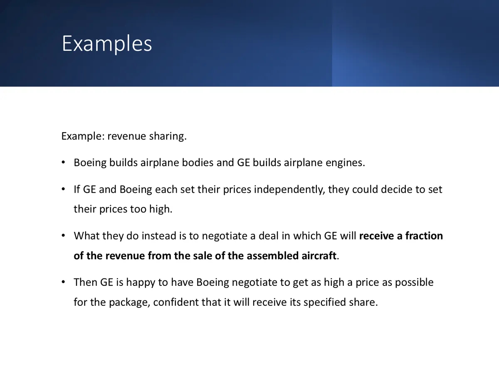
例子二：收益分成（revenue sharing）——波音与 GE。
- Boeing 造机身，GE 造发动机。
- 如果两家各自独立定价，按上一节的逻辑，价格会定得太高。
- 他们的做法：谈判约定，GE 从整机销售额中分得一个固定比例。
为什么这解决了问题？因为 GE 现在只关心整机能卖多贵——它与 Boeing 的目标一致了，乐意让 Boeing 去谈尽可能高的整机价，因为它的份额随之提高。
一句话：收益分成 = 把「两个价格决策」变成「一个价格决策 + 一个分成比例」。
幻灯片原文 / 板书
Examples --- Example: revenue sharing. Boeing builds airplane bodies and GE builds airplane engines. If GE and Boeing each set their prices independently, they could decide to set their prices too high. What they do instead is to negotiate a deal in which GE will receive a fraction of the revenue from the sale of the assembled aircraft. Then GE is happy to have Boeing negotiate to get as high a price as possible for the package, confident that it will receive its specified share.
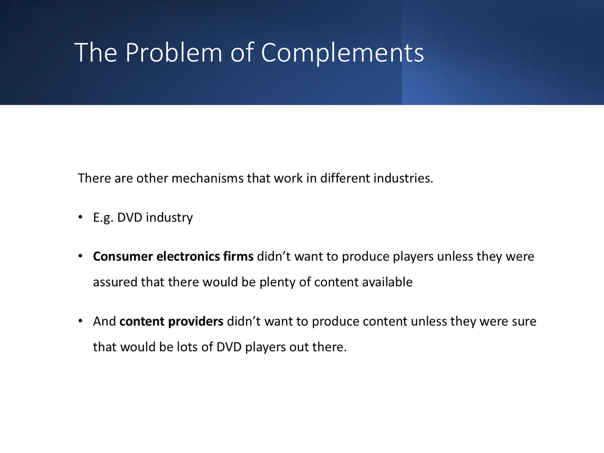
例子三：DVD 行业的两难。
- 消费电子厂商不愿生产播放机，除非确定「有大量内容可看」；
- 内容供应商不愿生产内容，除非确定「市面上有大量播放机」。
这是互补品的鸡生蛋问题：任何一方单独行动都没有价值。
注意这里的结构：它不只是「定价太高」，而是根本没人愿意先投资——互补品的协调问题比定价问题更严重。
幻灯片原文 / 板书
The Problem of Complements --- There are other mechanisms that work in different industries. E.g. DVD industry Consumer electronics firms didn’t want to produce players unless they were assured that there would be plenty of content available And content providers didn’t want to produce content unless they were sure that would be lots of DVD players out there.
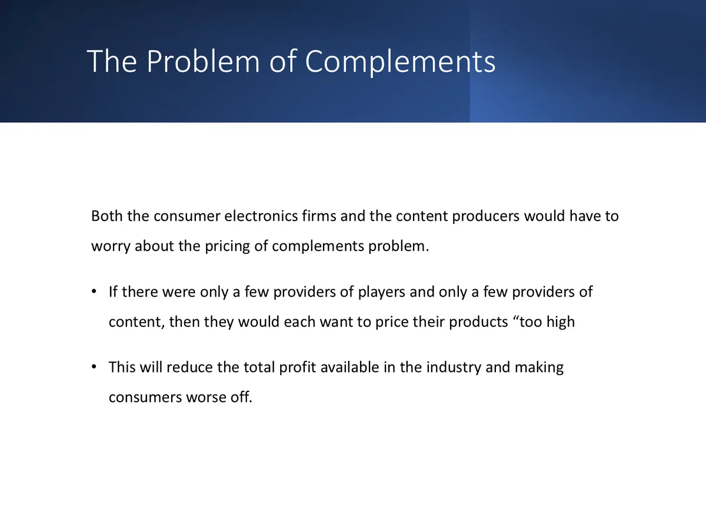
如果只有少数几家播放机厂商、少数几家内容商，那么按第 8–12 页的推导：
每一方都会把价格定得「太高」，压低整个行业的总利润，并让消费者更糟。
原因还是双重边际化：播放机和碟片是同一笔消费的两个部分，但被两次加价。
这也解释了为什么这类行业特别需要协调机制——下一个例子就是。
幻灯片原文 / 板书
The Problem of Complements --- Both the consumer electronics firms and the content producers would have to worry about the pricing of complements problem. If there were only a few providers of players and only a few providers of content, then they would each want to price their products “too high This will reduce the total profit available in the industry and making consumers worse off.
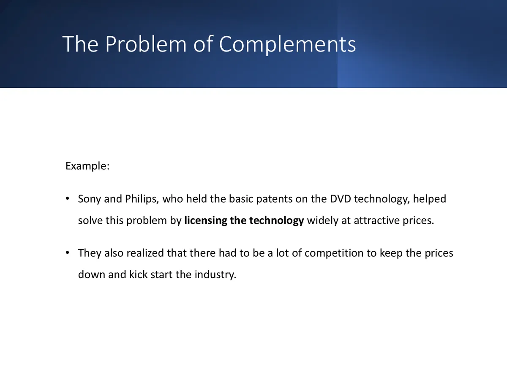
Sony 与 Philips 的解法：他们持有 DVD 技术的基础专利，于是以有吸引力的价格广泛授权这项技术。
他们的判断很清醒：
- 必须让大量厂商进入、彼此竞争，才能把播放机价格压下来；
- 播放机便宜了，碟片需求才起得来，整个行业才能被「点燃」（kick start）。
这是第 7 页模型的直接应用：降低互补品的价格，等于提高自己产品的需求。有时候，主动让互补品市场变得竞争激烈，是对自己最有利的策略。
幻灯片原文 / 板书
The Problem of Complements --- Example: Sony and Philips, who held the basic patents on the DVD technology, helped solve this problem by licensing the technology widely at attractive prices. They also realized that there had to be a lot of competition to keep the prices down and kick start the industry.
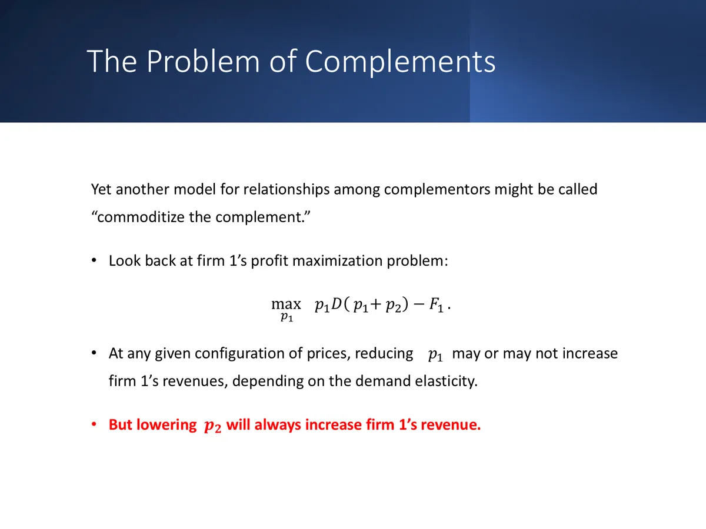
（图形页：互补品定价与授权策略的效果。）
这一页用图形把前面的推理画出来：横轴是系统总产量，纵轴是价格/成本，对比「独立定价的总价」与「一体化（或授权后竞争）的总价」，并标出两者之间的双重边际化缺口。
读图只需记住一件事：两个价格叠加的位置，永远在「一个价格」的右边（更高处）。
幻灯片原文 / 板书
The Problem of Complements
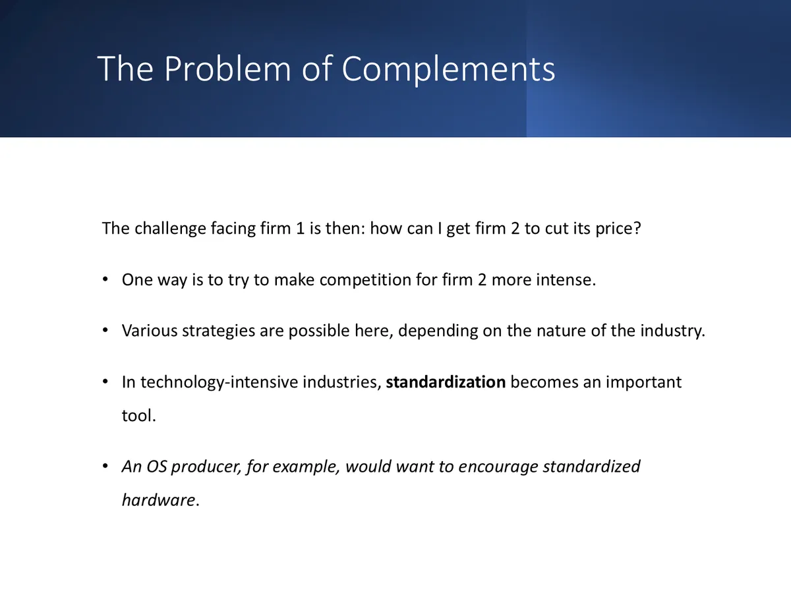
于是产生一个策略问题（这页是全讲最「商人」的一页）：
厂商 1 的挑战是：我怎么让厂商 2 降价？
课件给的答案：想办法让厂商 2 面对更激烈的竞争。
手段因行业而异；在技术密集型行业，标准化是关键工具——例如操作系统厂商会希望硬件标准化（多家硬件厂商用同一标准互相杀价，OS 就能卖得更多）。
一句话：让你的互补者变成红海，你的需求就变大了。
幻灯片原文 / 板书
The Problem of Complements --- The challenge facing firm 1 is then: how can I get firm 2 to cut its price? One way is to try to make competition for firm 2 more intense. Various strategies are possible here, depending on the nature of the industry. In technology-intensive industries, standardization becomes an important tool. An OS producer, for example, would want to encourage standardized hardware.
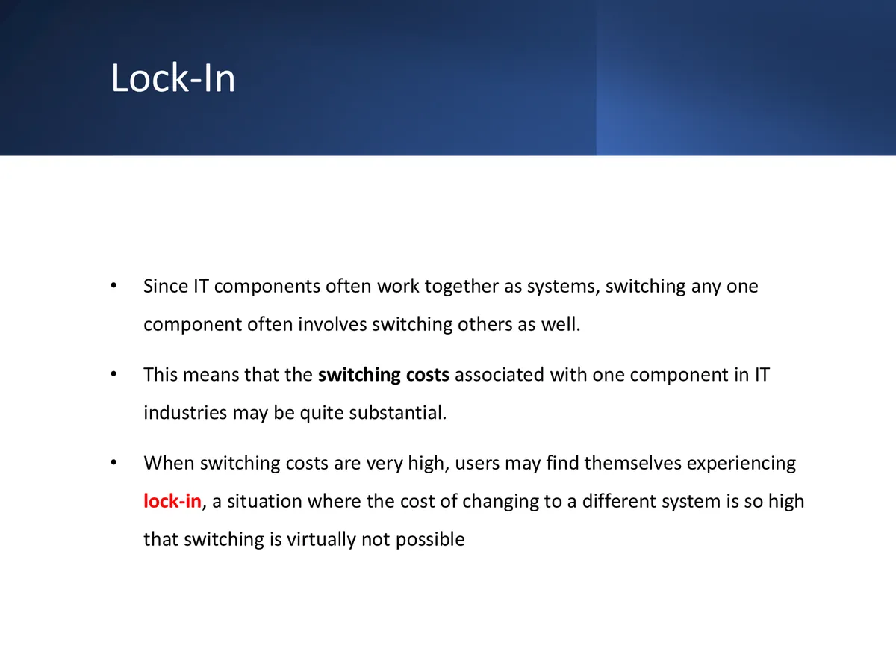
转向第二个主题：锁定（Lock-In）。
起点是一个系统性的观察：IT 组件成套工作，所以换掉任何一个组件，往往要连带换掉其他组件。
于是「一个组件的转换成本」在 IT 行业可能非常高。
定义：
锁定（lock-in）是指——换到另一个系统的成本高到几乎无法转换的情形。
注意锁定不是「不想换」，而是「换不起」。
幻灯片原文 / 板书
Lock-In --- Since IT components often work together as systems, switching any one component often involves switching others as well. This means that the switching costs associated with one component in IT industries may be quite substantial. When switching costs are very high, users may find themselves experiencing lock-in, a situation where the cost of changing to a different system is so high that switching is virtually not possible
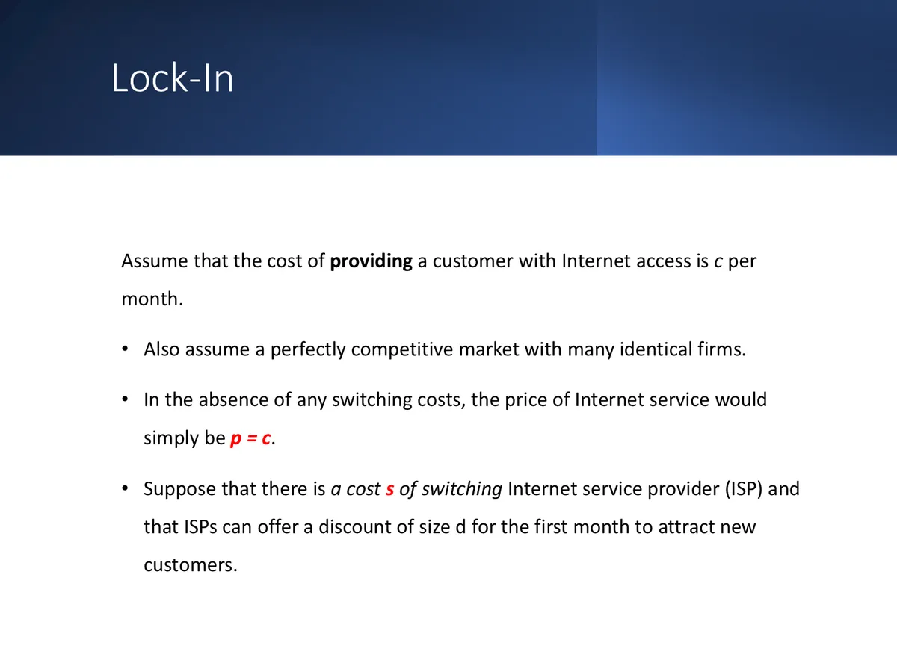
建立一个 ISP（互联网服务商）模型来算清楚这件事。
假设：
- 为一位客户提供上网服务的成本是每月 c；
- 市场是完全竞争的，有许多相同的厂商；
- 没有转换成本时，价格就是 p = c（第 5 讲的结论：完全竞争下价格 = 边际成本）。
现在引入两个新参数：
- s：换 ISP 的转换成本（重新配置、改邮箱、学习成本……）；
- d：ISP 为吸引新客户提供的首月折扣。
幻灯片原文 / 板书
Lock-In --- Assume that the cost of providing a customer with Internet access is c per month. Also assume a perfectly competitive market with many identical firms. In the absence of any switching costs, the price of Internet service would simply be p = c. Suppose that there is a cost s of switching Internet service provider (ISP) and that ISPs can offer a discount of size d for the first month to attract new customers.
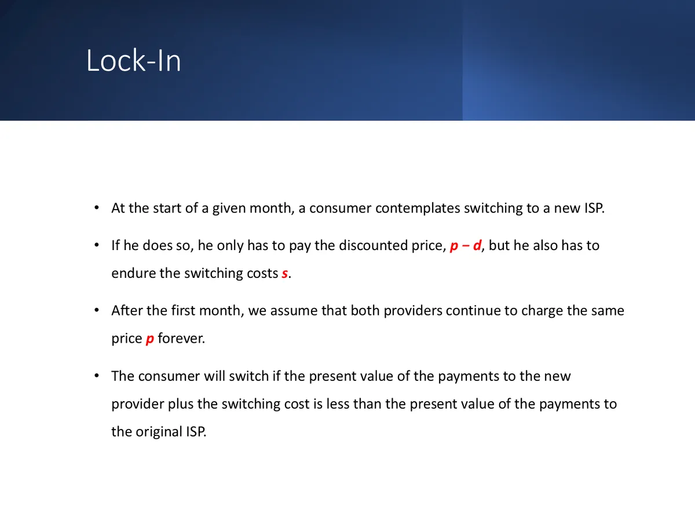
某个月初，消费者考虑要不要换 ISP：
- 换：只需付折扣价 p − d，但要承受转换成本 s；
- 不换：继续付 p。
- 假设从第二个月起，两家都永远收同样的价格 p。
决策规则（现值比较）：
只有当「付给新厂商的支付现值 加上 转换成本」小于「付给原厂商的支付现值」时，消费者才会换。
下一页开始把这个不等式算开。
幻灯片原文 / 板书
Lock-In --- At the start of a given month, a consumer contemplates switching to a new ISP. If he does so, he only has to pay the discounted price, p − d, but he also has to endure the switching costs s. After the first month, we assume that both providers continue to charge the same price p forever. The consumer will switch if the present value of the payments to the new provider plus the switching cost is less than the present value of the payments to the original ISP.
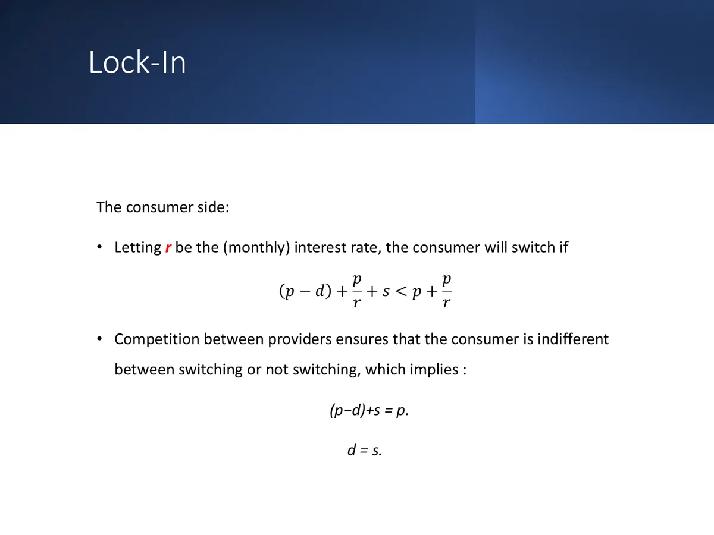
推导第一步：写出两边的现值。
- 留在原厂商：每月付 p，永续 → 现值 =
p/(1 − 1/(1+i))，其中 i 是月利率（也可写成 p + p/i）。 - 换到新厂商：首月付
p − d，之后每月付 p → 现值 =(p − d) + s + p/i。
注意 s 是一次性的，只出现在切换那一边。
幻灯片原文 / 板书
Lock-In
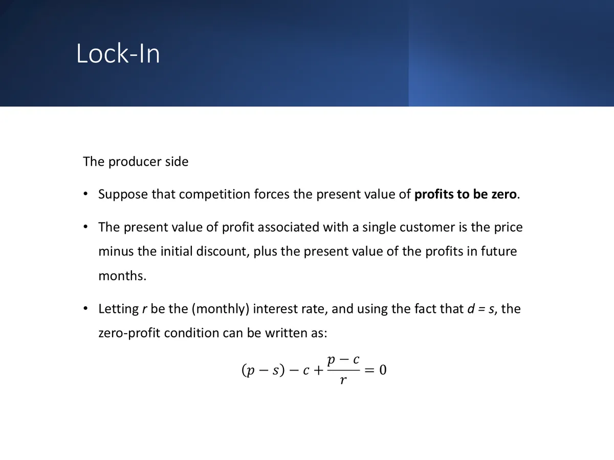
推导第二步：比较两个现值。
留在原处：p + p/i 切换：(p − d) + s + p/i
两边都有 p/i，相消。于是切换的条件简化为：
p − d + s < p⟺d > s
结论非常干净：只有当首月折扣大于转换成本时，消费者才会换。
幻灯片原文 / 板书
Lock-In
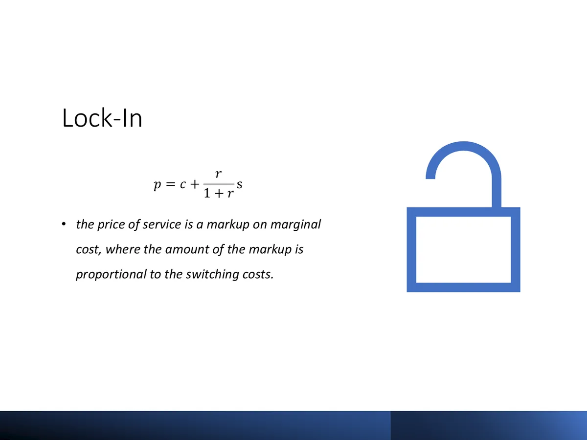
推导第三步：在位者的反击。
如果新进入者用 d 来挖客户，原厂商完全可以对自己的新客户（也就是从别人那里挖来的人）也给折扣。
于是出现折扣竞赛：双方都必须给到 d = s 左右，才守得住/挖得动客户。
关键洞察：转换成本 s 变成了「获客成本」的下限——它没有消失，只是从消费者身上转移成了厂商的补贴支出。
幻灯片原文 / 板书
Lock-In
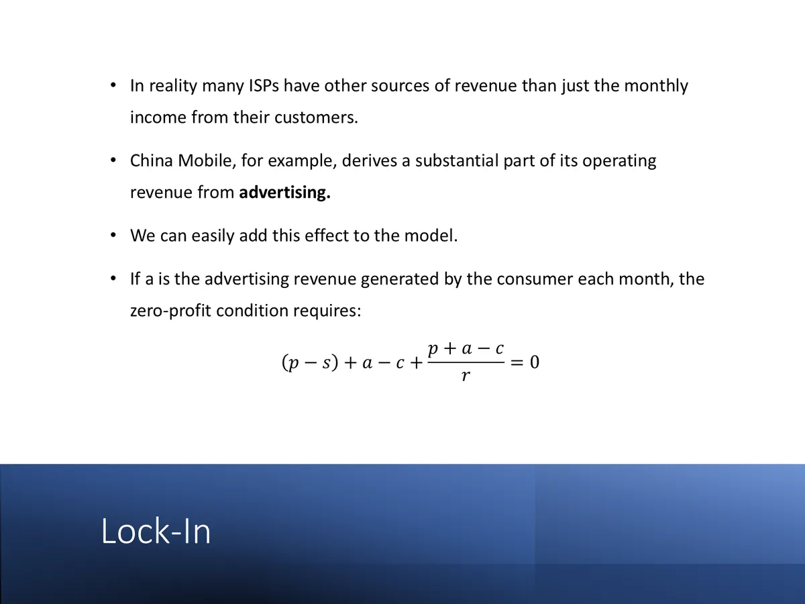
推导第四步：谁是赢家？
- 对在位者：s 是一道护城河，只要 d 不够大，客户就挖不走；它的存量客户是租金来源。
- 对新进入者：它必须一次性支付 s 才能获得一个客户，所以它只有在「未来能从该客户身上赚回 s」时才愿意进入。
- 对消费者：短期拿到折扣，长期被锁定；总剩余未必提高。
这就是为什么现实中「首月 1 元」「免费换号」这类促销，本质是在买客户。
幻灯片原文 / 板书
Lock-In
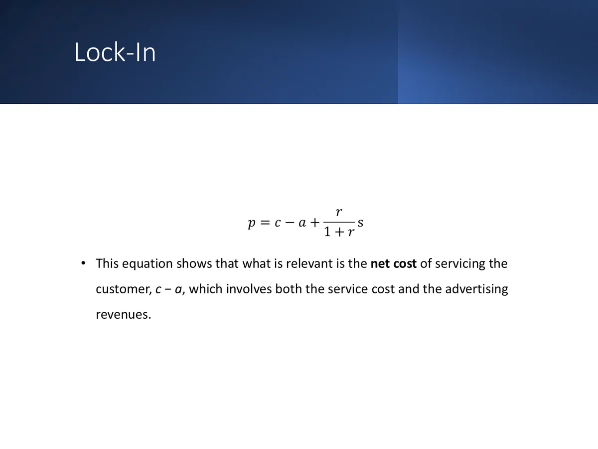
这一页把锁定模型收口：
锁定 = 转换成本 > 可获得的折扣。
政策含义也很清楚：
- 降低转换成本（号码可携带、数据可导出、标准接口）会直接削弱在位者的市场势力；
- 反过来，厂商有强烈动机人为提高转换成本（专有格式、绑定账号、迁移收费）。
记住这条判据：看一个行业的竞争程度，先看用户换供应商要付多少代价。
幻灯片原文 / 板书
Lock-In
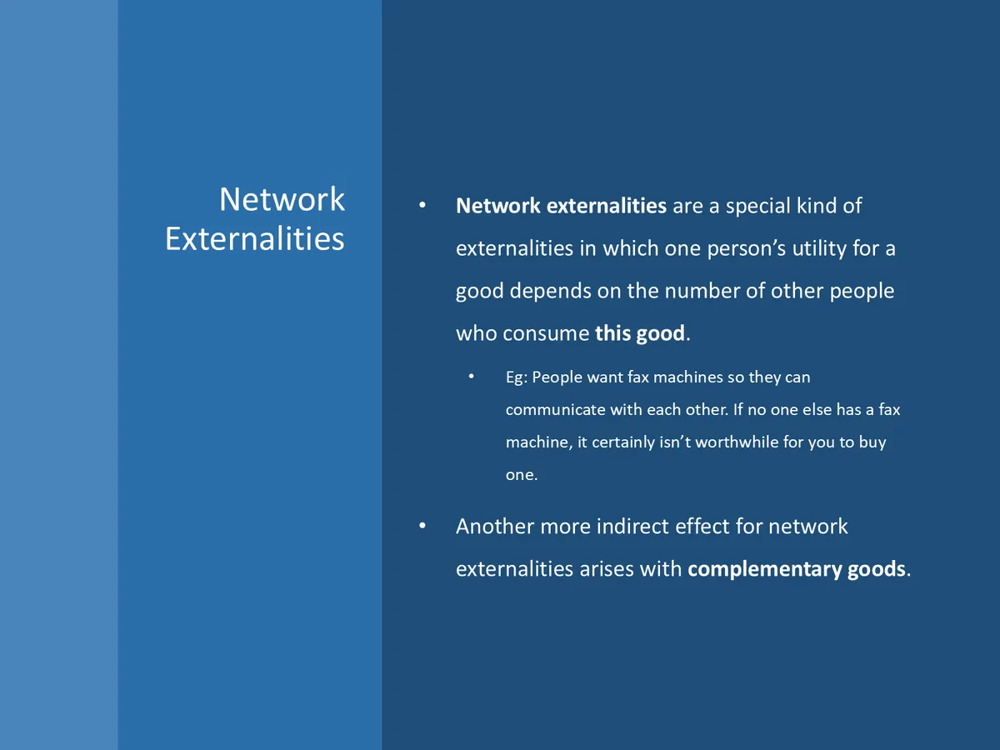
第三个主题：网络外部性（Network Externalities）。
定义：
网络外部性是外部性的一种特殊形式——一个人对某商品的效用，取决于有多少其他人也在消费这件商品。
课件的例子：传真机。如果别人都没有传真机，你买一台毫无意义。
还有一类间接的网络外部性：通过互补品起作用——用的人多 → 互补品供给多 → 产品更有价值（这正是后面「双边市场」的伏笔）。
幻灯片原文 / 板书
Network Externalities --- Network externalities are a special kind of externalities in which one person’s utility for a good depends on the number of other people who consume this good. Eg: People want fax machines so they can communicate with each other. If no one else has a fax machine, it certainly isn’t worthwhile for you to buy one. Another more indirect effect for network externalities arises with complementary goods.
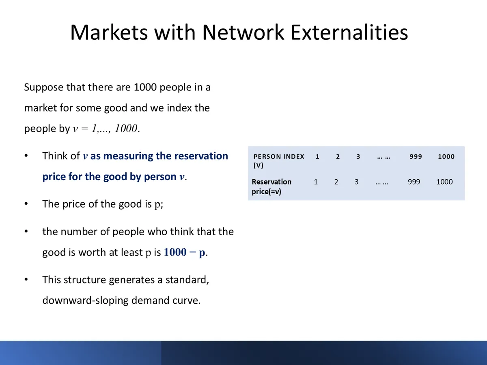
先建一个没有网络外部性的基准模型。
- 市场上有 1000 人，用 v = 1, …, 1000 编号；
- 把 v 解释为第 v 个人对这件商品的保留价格（reservation price）；
- 价格为 p 时，认为「这东西至少值 p」的人数是 1000 − p。
于是得到一条标准的、向下倾斜的需求曲线。
课件用一张表把「人编号」与「保留价格」一一对应：1→1，2→2，3→3，……，1000→1000。这是均匀分布的离散版本。
幻灯片原文 / 板书
Markets with Network Externalities --- Suppose that there are 1000 people in a market for some good and we index the people by v = 1,..., 1000. Think of v as measuring the reservation price for the good by person v. The price of the good is p; the number of people who think that the good is worth at least p is 1000 − p. This structure generates a standard, downward-sloping demand curve. --- [TABLE] Person index (v) | 1 | 2 | 3 | … … | 999 | 1000 Reservation price(=v) | 1 | 2 | 3 | … … | 999 | 1000
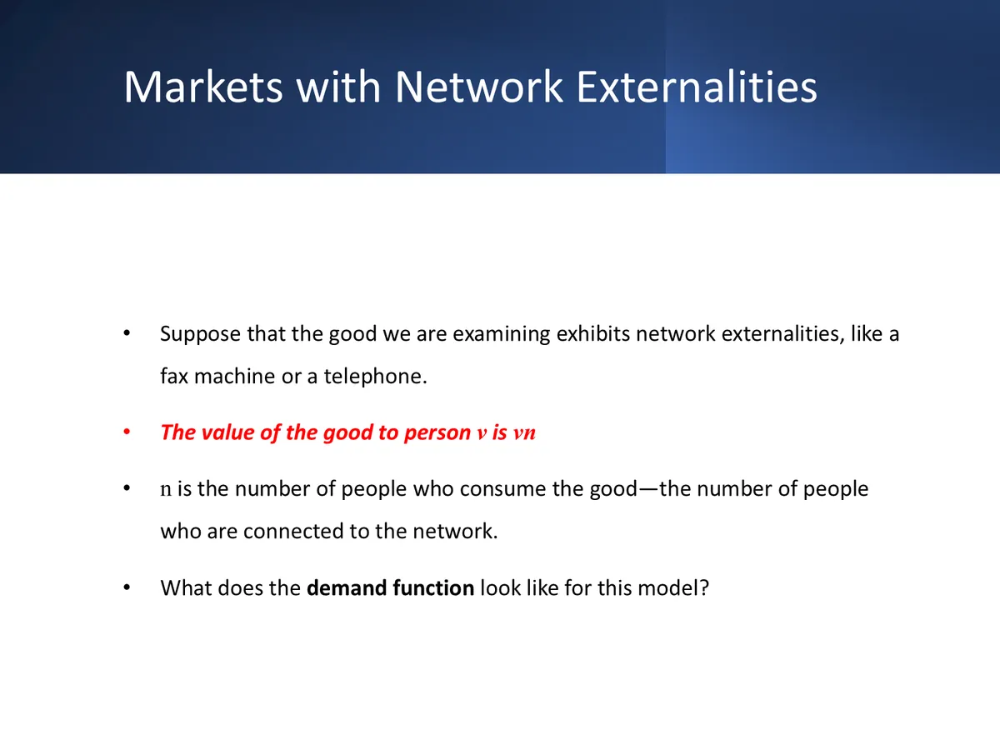
现在让商品具有网络外部性（传真机、电话）。
关键改动：第 v 个人的价值不再是 v，而是
v·n
其中 n 是消费这件商品的人数——也就是接入网络的人数。
问题：这样一改，需求函数长什么样？
答案会让你意外——它不再是向下倾斜的一条线。
幻灯片原文 / 板书
Markets with Network Externalities --- Suppose that the good we are examining exhibits network externalities, like a fax machine or a telephone. The value of the good to person v is vn n is the number of people who consume the good—the number of people who are connected to the network. What does the demand function look like for this model?
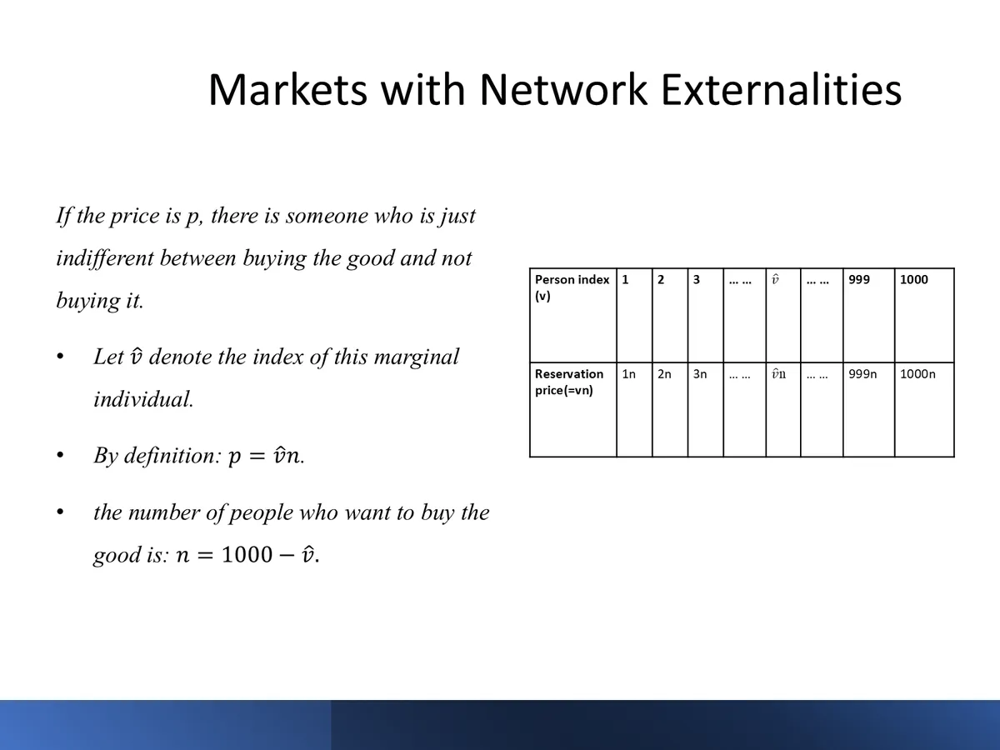
推导第一步：写下两个方程。
- 支付意愿方程：边际消费者的价值等于价格 →
p = v̂·n，其中 v̂ 是「刚好愿意买」的那个人的编号。 - 人数方程：编号高于 v̂ 的人都会买 →
n = 1000 − v̂。
两个方程、两个未知数（v̂ 与 n），消掉 v̂ 就得到均衡关系。
幻灯片原文 / 板书
Markets with Network Externalities
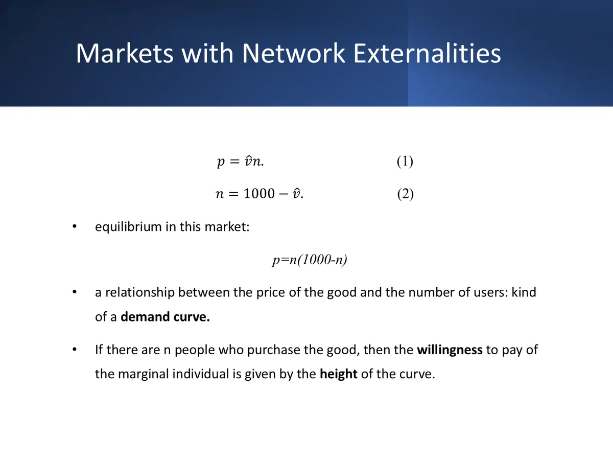
推导第二步：消去 v̂。
由 (2) 得 v̂ = 1000 − n，代入 (1)：
p = n(1000 − n)
课件对这一页的定位很精妙：这不是普通的供给或需求，而是「价格与用户数量之间的关系」——它像一条需求曲线。
读法：如果有 n 个人购买，那么边际个人的支付意愿就是这条曲线的高度。
幻灯片原文 / 板书
Markets with Network Externalities
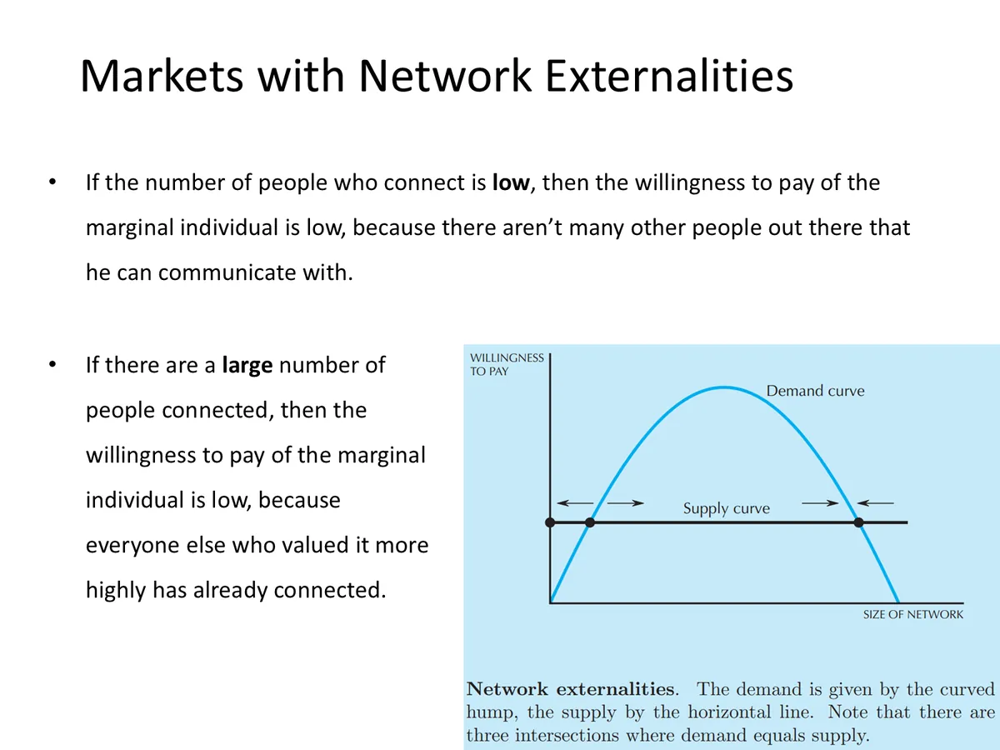
为什么这条曲线是倒 U 形（先升后降）？课件给了两句话，必须理解：
- n 很小时：网络很小，边际个人能和谁通信的人太少，所以支付意愿很低。
- n 很大时：支付意愿也很低——因为价值最高的人早就已经接入了，剩下的是价值较低的人。
中间那段才是支付意愿最高的区域：网络已经够大，而边际上还有高价值用户在。
幻灯片原文 / 板书
Markets with Network Externalities --- If the number of people who connect is low, then the willingness to pay of the marginal individual is low, because there aren’t many other people out there that he can communicate with. --- If there are a large number of people connected, then the willingness to pay of the marginal individual is low, because everyone else who valued it more highly has already connected.
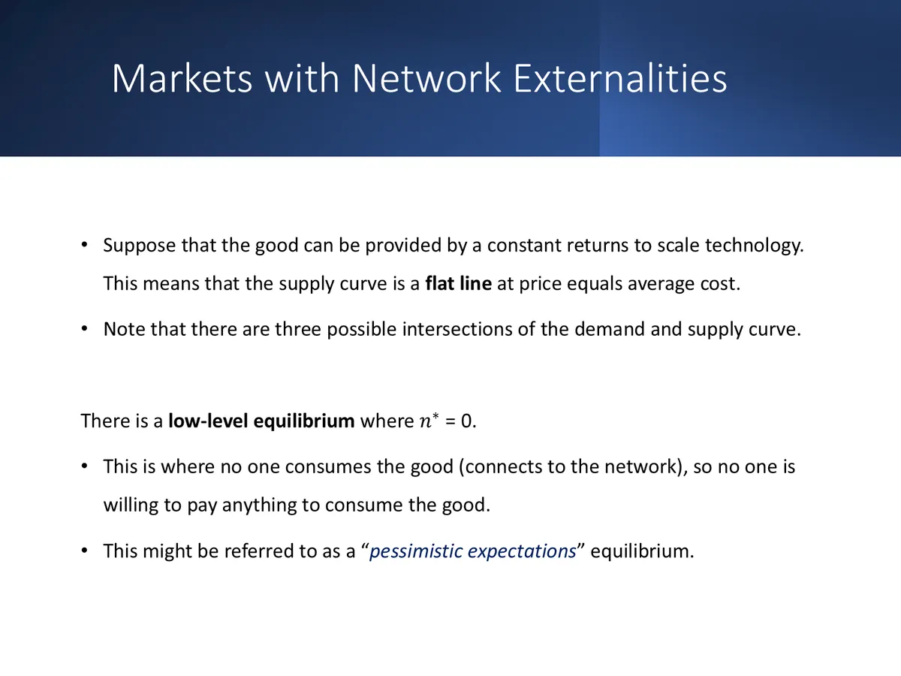
（图形页：把 p = n(1000 − n) 画出来。）
图的形状：一条开口向下的抛物线，从原点 (0,0) 出发上升，在 n = 500 处达到最高点 p = 250000，再下降，回到 (0, 1000)。
再叠加一条水平的成本线 p = c（供给）。抛物线与水平线交于三点——这就是三个均衡。这是本讲最重要的图。
幻灯片原文 / 板书
Markets with Network Externalities
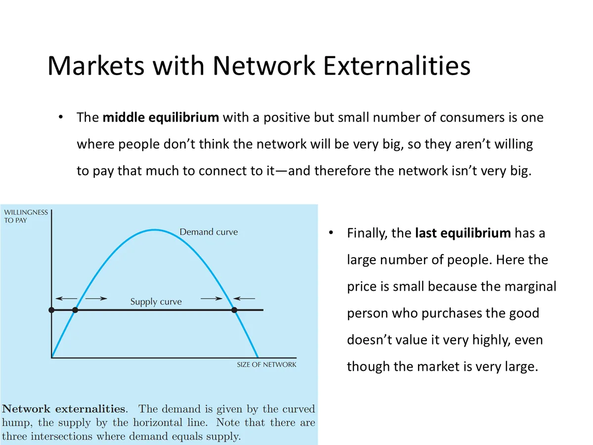
三个均衡各自的含义：
- 低均衡（n = 0）：没人接入。理由自洽——因为预期没人用，所以没人愿意付钱。
- 中间均衡（n 为正但很小）：人们不认为网络会大，所以不愿多付，于是网络真的不大。
- 高均衡（n 很大）：价格很低，因为边际购买者价值不高，尽管市场规模很大。
注意这三个均衡都能自我实现——预期决定现实。这是与前面所有市场最不一样的地方。
幻灯片原文 / 板书
Markets with Network Externalities --- The middle equilibrium with a positive but small number of consumers is one where people don’t think the network will be very big, so they aren’t willing to pay that much to connect to it—and therefore the network isn’t very big. --- Finally, the last equilibrium has a large number of people. Here the price is small because the marginal person who purchases the good doesn’t value it very highly, even though the market is very large.
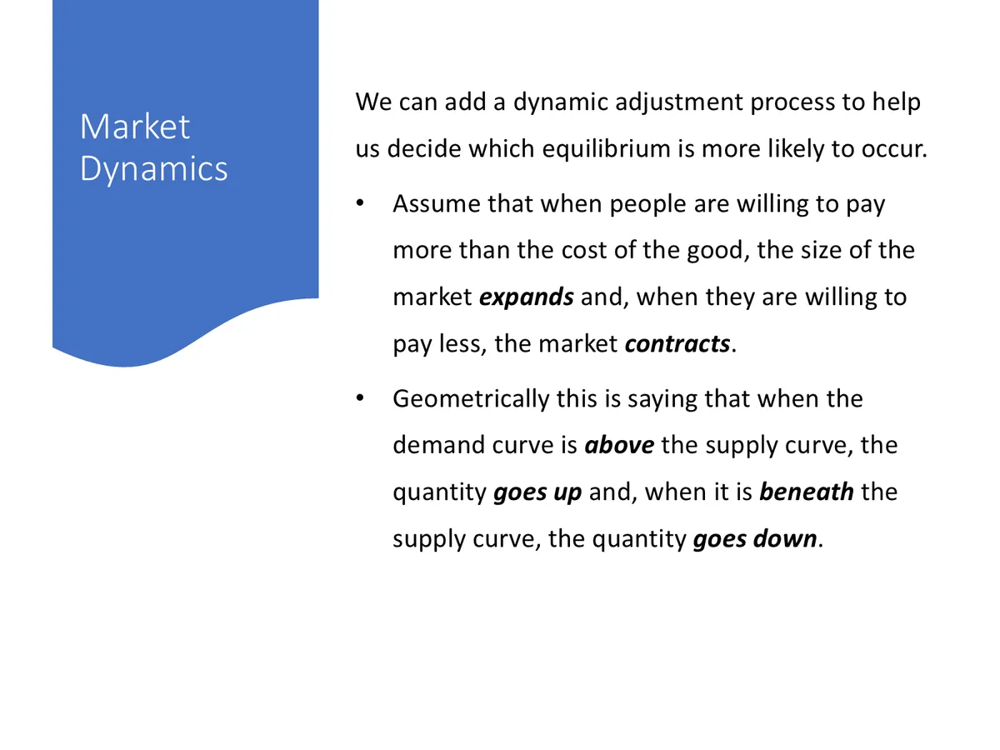
问题：实际会出现哪一个？
课件的办法：加入动态调整过程。
规则：当人们愿意支付的钱高于商品成本时，市场规模扩张；当愿意支付的钱低于成本时，市场收缩。
几何上：需求曲线在供给曲线上方 → 数量上升；在下方 → 数量下降。
这是标准的「价格信号引导数量调整」逻辑，只是这次画在 (n, p) 平面上。
幻灯片原文 / 板书
Which of the three equilibria will we see occur? --- We can add a dynamic adjustment process to help us decide which equilibrium is more likely to occur. Assume that when people are willing to pay more than the cost of the good, the size of the market expands and, when they are willing to pay less, the market contracts. Geometrically this is saying that when the demand curve is above the supply curve, the quantity goes up and, when it is beneath the supply curve, the quantity goes down. --- Market Dynamics
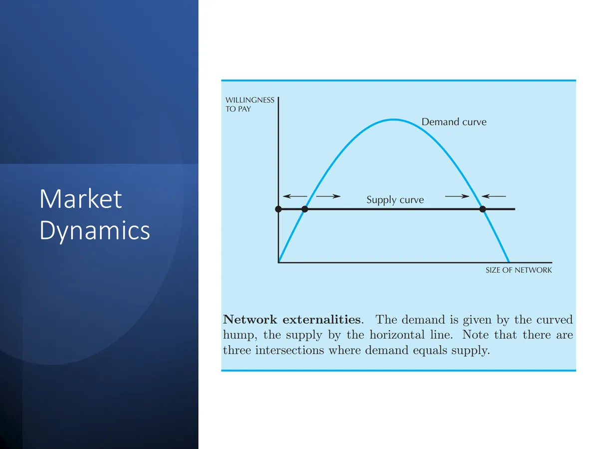
（图形页：动态调整的方向箭头。）
图上在三个交点附近标出箭头：
- n = 0 处：需求曲线在成本线下方，任何正的 n 都会缩回 0——箭头指向左边。
- 中间交点：左侧向下、右侧向上——箭头背离该点。
- 高交点：左侧向上、右侧向下——箭头指向该点。
一句话：看箭头指向谁，谁就是稳定的。
幻灯片原文 / 板书
Market Dynamics
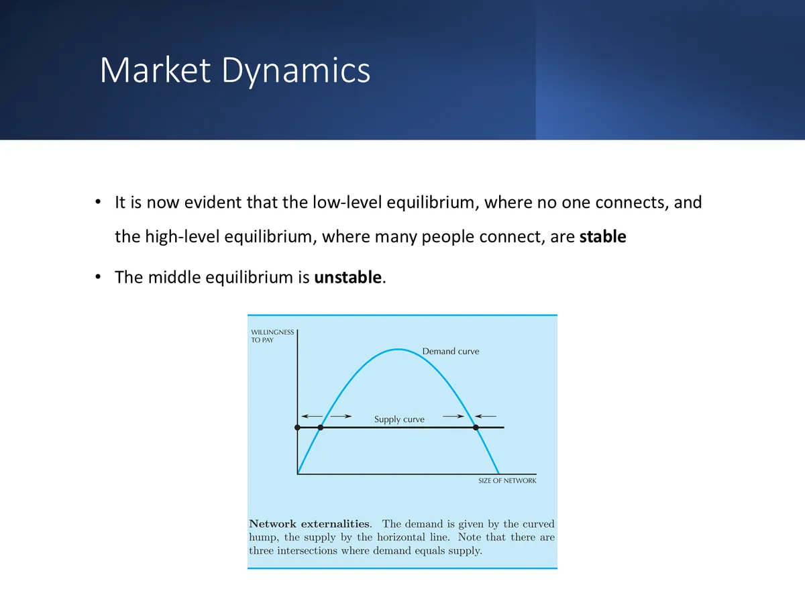
结论（本讲的核心结论之一）：
低水平均衡（没人接入）与高水平均衡（很多人接入）是稳定的；中间那个均衡是不稳定的。
为什么中间不稳定？因为它是「预期」与「现实」的临界点：稍微多一点人接入，预期就会自我强化，系统冲向高均衡；稍微少一点，就退回零。
所以它更像一道门槛，而不是一个可以停留的地方。
幻灯片原文 / 板书
Market Dynamics --- It is now evident that the low-level equilibrium, where no one connects, and the high-level equilibrium, where many people connect, are stable The middle equilibrium is unstable.
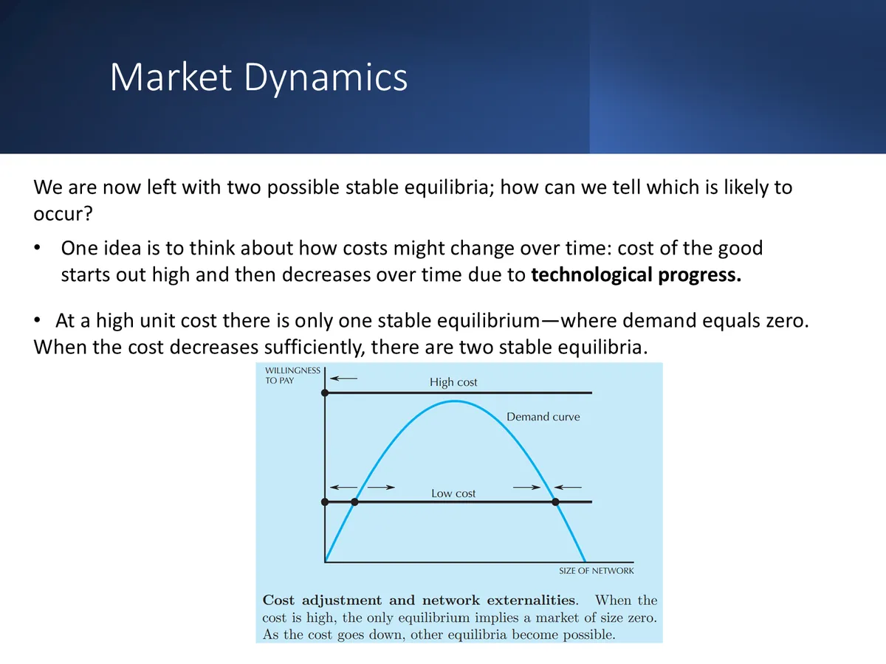
于是只剩两个稳定均衡，怎么判断现实会落在哪个？
课件的第一个思路：看成本如何随时间变化。
- 商品成本一开始很高，随技术进步逐渐下降。
- 成本很高时：水平成本线在抛物线最高点之上 → 只有一个稳定均衡，即 n = 0（没人用得起）。
- 成本降到足够低时：水平线与抛物线交于三点 → 两个稳定均衡出现了。
这解释了很多新技术的命运：不是没人要，是等成本降下来。
幻灯片原文 / 板书
Market Dynamics --- We are now left with two possible stable equilibria; how can we tell which is likely to occur? One idea is to think about how costs might change over time: cost of the good starts out high and then decreases over time due to technological progress. At a high unit cost there is only one stable equilibrium—where demand equals zero. When the cost decreases sufficiently, there are two stable equilibria.
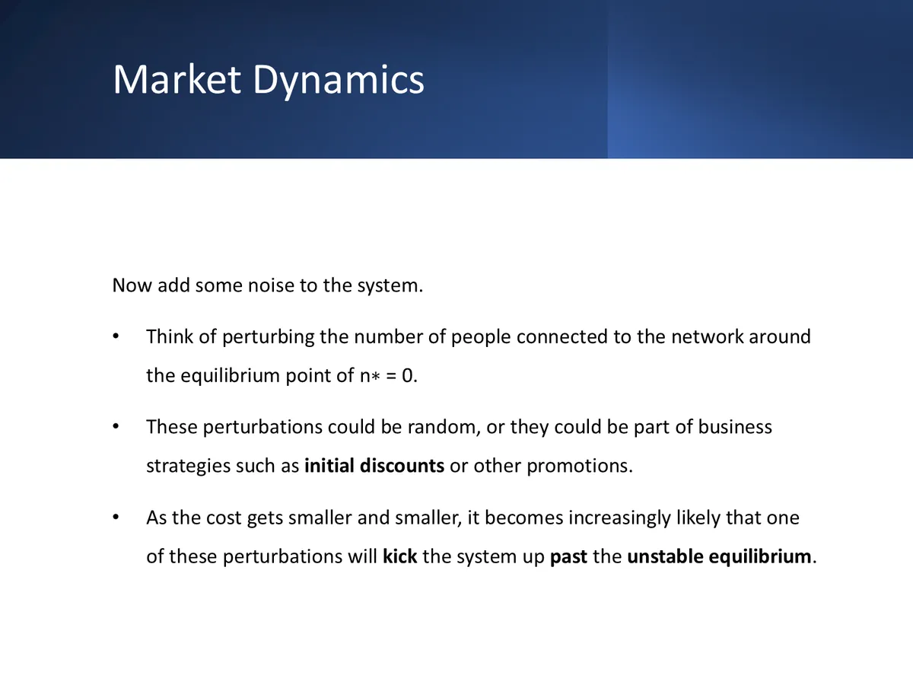
第二个思路：加噪声（noise）。
想象在 n* = 0 附近对「接入人数」做微小扰动：
- 扰动可以是随机的（偶然有人试用了）；
- 也可以是厂商策略的一部分（初始折扣、促销、免费试用）。
随着成本越来越低，一次扰动把系统推过不稳定均衡的概率越来越大——因为门槛（中间交点）越来越低。
幻灯片原文 / 板书
Market Dynamics --- Now add some noise to the system. Think of perturbing the number of people connected to the network around the equilibrium point of n∗ = 0. These perturbations could be random, or they could be part of business strategies such as initial discounts or other promotions. As the cost gets smaller and smaller, it becomes increasingly likely that one of these perturbations will kick the system up past the unstable equilibrium.
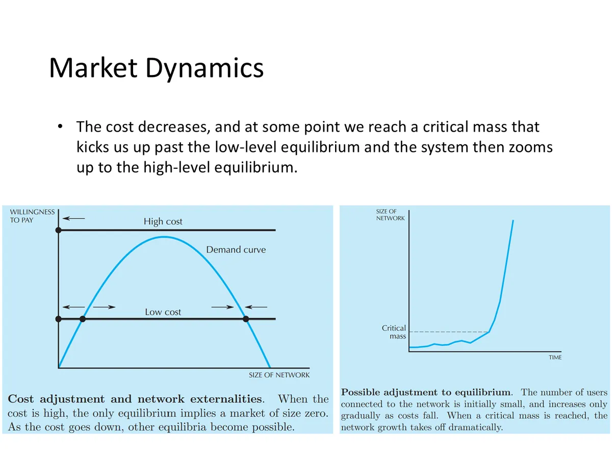
第三个概念：临界规模（critical mass）。
成本不断下降，到某个点，一次扰动就能把系统推过低水平均衡；此后系统会自己冲到高水平均衡。
这个「刚好能推过去」的规模就是临界规模。
它的政策与商业含义极强：临界规模之前的一切投入，都是为了让系统跨过那道门槛；跨过之后，增长是自发的。
幻灯片原文 / 板书
Market Dynamics --- The cost decreases, and at some point we reach a critical mass that kicks us up past the low-level equilibrium and the system then zooms up to the high-level equilibrium.
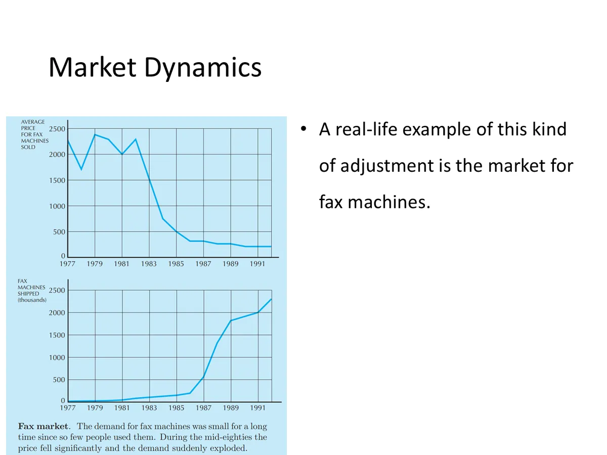
课件的现实例子：传真机市场。
早期的传真机极贵、极少数人用，买它几乎没有意义（n 太小）；随着价格下降、企业与机构先行采用，接入人数跨过临界规模，传真机迅速普及，最后成为办公标配。
这个例子把 40–42 页的三步（成本下降 → 扰动 → 临界规模 → 自我强化）完整走了一遍。
幻灯片原文 / 板书
Market Dynamics --- A real-life example of this kind of adjustment is the market for fax machines.
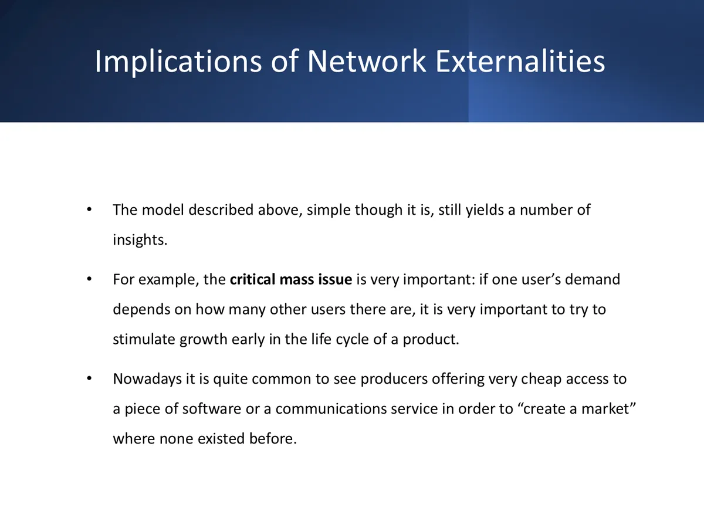
网络外部性的含义之一：早期增长极其重要。
课件的话：如果一个用户的需求取决于有多少其他用户，那么在产品的生命周期早期刺激增长就非常关键。
现实中的对应做法（课件点名）：以极低的价格提供软件或通信服务，去「创造」一个原本不存在的市场。
用第 42 页的语言说：低价不是在让利，是在买临界规模。
幻灯片原文 / 板书
Implications of Network Externalities --- The model described above, simple though it is, still yields a number of insights. For example, the critical mass issue is very important: if one user’s demand depends on how many other users there are, it is very important to try to stimulate growth early in the life cycle of a product. Nowadays it is quite common to see producers offering very cheap access to a piece of software or a communications service in order to “create a market” where none existed before.
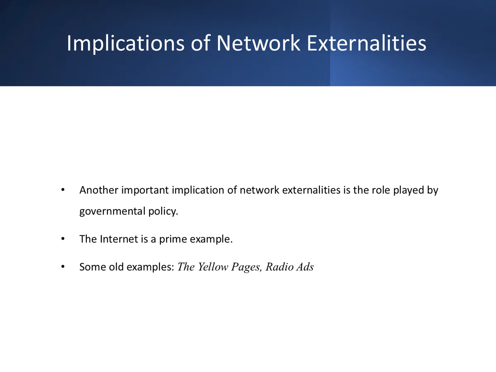
含义之二：政府政策的作用。
课件举的例子：
- 互联网本身——最初由政府和大学网络发展而来，是典型的「公共投资点火、私人部门接手」。
- 更老的例子：黄页（Yellow Pages）、电台广告——它们都是「把两边连起来」的中介。
这一页的深意：网络外部性意味着市场可能卡在低均衡，而跳出低均衡可能需要集体行动（标准、基础设施、公共采购）。
幻灯片原文 / 板书
Implications of Network Externalities --- Another important implication of network externalities is the role played by governmental policy. The Internet is a prime example. Some old examples: The Yellow Pages, Radio Ads
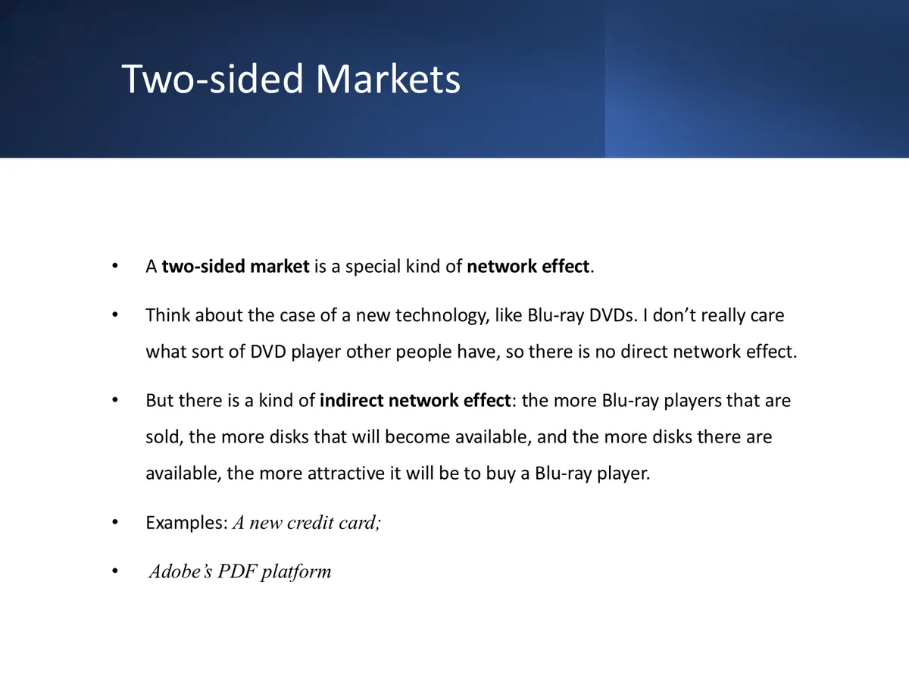
双边市场（Two-sided Markets）。
定义：双边市场是网络效应的一种特殊形式——间接网络效应。
课件的例子：蓝光 DVD。
- 我并不在乎别人用哪种播放机 → 没有直接网络效应。
- 但存在间接效应：播放机卖得越多 → 碟片越多 → 买播放机越有吸引力。
其他例子：新的信用卡（持卡人 ↔ 商户）、Adobe 的 PDF 平台（读者 ↔ 作者）。
幻灯片原文 / 板书
Two-sided Markets --- A two-sided market is a special kind of network effect. Think about the case of a new technology, like Blu-ray DVDs. I don’t really care what sort of DVD player other people have, so there is no direct network effect. But there is a kind of indirect network effect: the more Blu-ray players that are sold, the more disks that will become available, and the more disks there are available, the more attractive it will be to buy a Blu-ray player. Examples: A new credit card; Adobe’s PDF platform
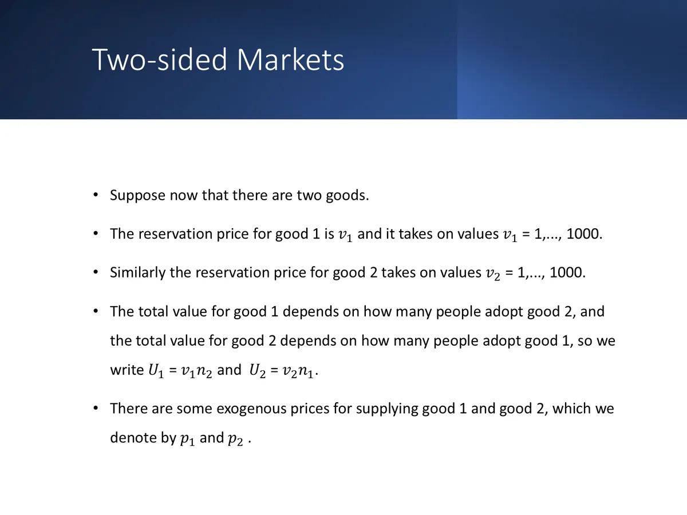
（图形页：双边市场的两侧需求。）
这一页把两边画成两条相互依赖的曲线：A 侧的用户量决定 B 侧的支付意愿，反之亦然。
读图要点：两条曲线不是「同一条需求曲线的两段」，而是两个市场的需求，通过对方的存在互相抬升。这就是「间接」二字的几何含义。
幻灯片原文 / 板书
Two-sided Markets
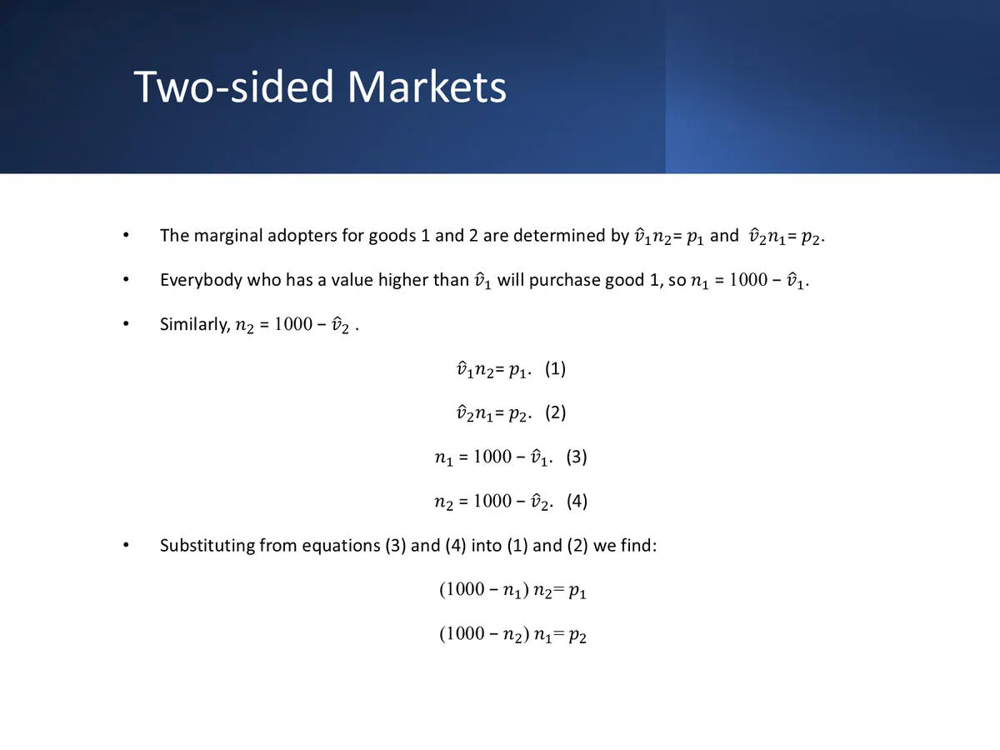
（图形页：双边市场的均衡。）
在 (数量, 价格) 平面上，两边的需求曲线与各自的成本线相交，得到的均衡互相以对方的数量为参数。
因此这类市场往往也有两个均衡：一边人少 → 另一边也人少；一边人多 → 另一边也多。下一页会明确说出这一点。
幻灯片原文 / 板书
Two-sided Markets
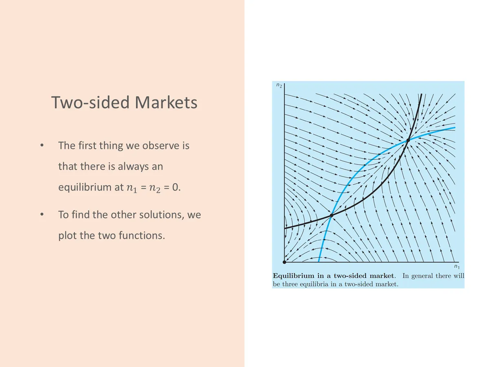
（图形页：双边市场的低均衡与高均衡。）
延续上一页：图上标出低水平与高水平两个交点，中间隔着一段不稳定的区域。
这正是第 35 页「三个均衡」结构在双边市场的重演——只是这次的自我强化来自另一侧，而不是同一侧的用户数。
幻灯片原文 / 板书
Two-sided Markets
把两页的话说全：
存在低水平均衡（两种商品都卖得很少）与高水平均衡（两种商品都卖得很多）。
供应商的挑战是：怎么走到高均衡去？
课件给的策略：补贴其中一侧的生产。以低于成本的价格卖一种商品，只要能带来更大的市场和另一种商品更多的利润，就是理性的。
这就是为什么：游戏机靠主机亏钱卖、靠软件赚钱；信用卡对持卡人免年费、向商户收费。
幻灯片原文 / 板书
Two-sided Markets --- There is a low-level equilibrium where little is sold of either good and a high-level equilibrium where there are substantial sales of both goods. The challenge facing a supplier is how to get to the high-level equilibrium. One strategy, mentioned above, is to subsidize the production of one of the goods. Selling one good below cost can make sense if it leads to a larger market and more profits for other goods you sell.
最后一块：权利管理（Rights Management）。
对知识产权的新商业模式兴趣很大，因为 IP 的交易形式极其多样：
- 书：卖断，也可以从图书馆借；
- 视频：买（买断碟片）或租；
- 软件：有的按特定用途授权，有的卖断；
- 共享软件（shareware）：付款是自愿的。
结论：选择「以什么条款和条件提供 IP」，本身就是一个关键商业决策。
幻灯片原文 / 板书
Rights Management --- There is much interest these days in new business models for intellectual property (IP). IP transactions take a variety of forms: books are sold outright and also borrowed from libraries. Videos can either be sold or rented. Some software is licensed for particular uses; other software is sold outright. Shareware is a form of software in which payment is voluntary. Choosing the terms and conditions under which a piece of intellectual property is offered is a critical business decision.
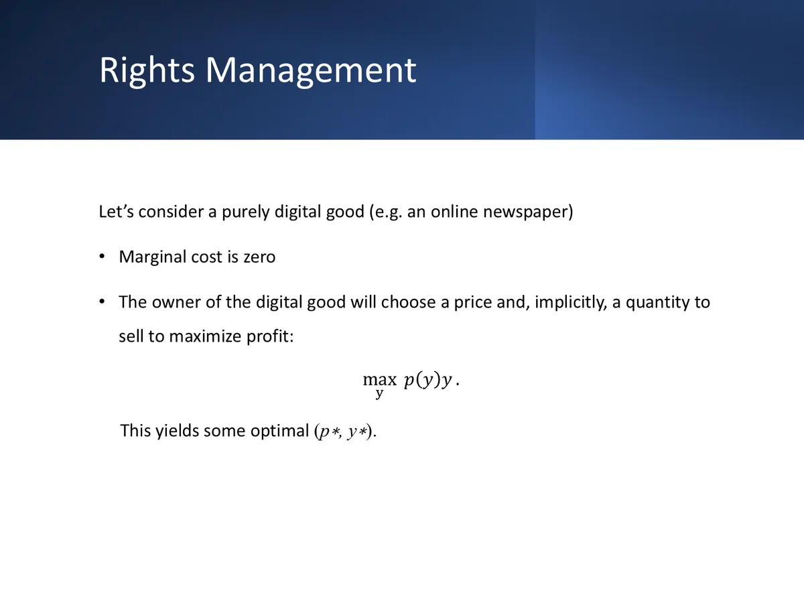
（图形页：权利管理的模型设定。）
这一页搭起模型的框架：横轴是「被消费的数量 y」，纵轴是价格/支付意愿；消费者的支付意愿取决于条款允许他用多少。
说白了，你不是在卖「一份拷贝」，你是在卖「一段使用权限」——权限越宽，同一份拷贝对消费者越值钱。
幻灯片原文 / 板书
Rights Management
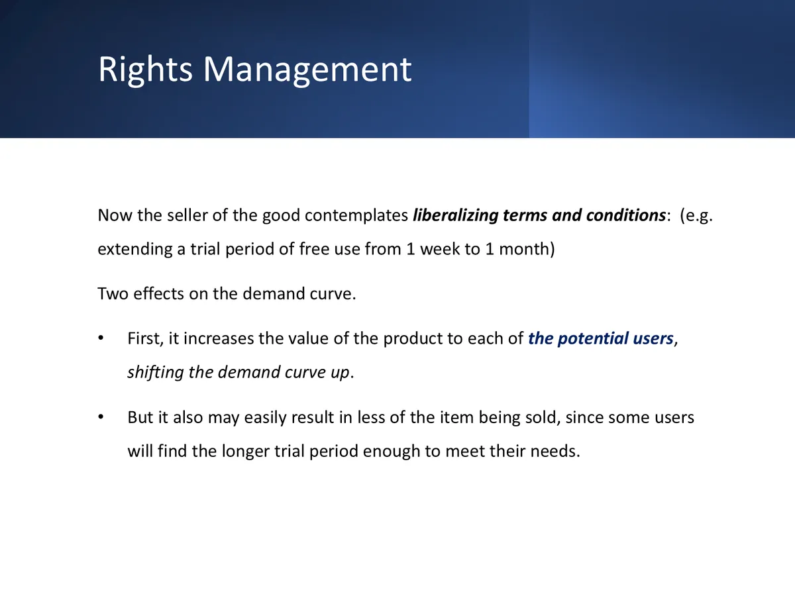
现在考虑卖方放宽条款（例如把免费试用期从 1 周延长到 1 个月）。
课件说这会有两个效应，且方向相反：
- 需求曲线上移：产品对每一位潜在用户的价值提高了。
- 销量可能下降：有些用户发现更长的试用期就够用了，于是不再购买。
这就是 IP 定价的核心张力：让产品更有用与让人更愿意付钱，可能互相矛盾。
幻灯片原文 / 板书
Rights Management --- Now the seller of the good contemplates liberalizing terms and conditions: (e.g. extending a trial period of free use from 1 week to 1 month) Two effects on the demand curve. First, it increases the value of the product to each of the potential users, shifting the demand curve up. But it also may easily result in less of the item being sold, since some users will find the longer trial period enough to meet their needs.
推导第一步：需求上移。
把「放宽条款」记为价值提高 a 倍（a > 1）：每位消费者的支付意愿变成原来的 a 倍。
几何上：整条需求曲线向上平移/外扩。
注意：这一步只考虑「更好用」的好处，还没算「更少人买」的坏处。
幻灯片原文 / 板书
Rights Management
推导第二步：购买人数下降。
把「少买的人」记为购买量变成原来的 1/b（b > 1）：因为一部分需求被「宽松的条款」本身满足了。
几何上：实际卖出的份数减少。
到这一步，两个效应同时出现：每份卖得更贵（a），但卖得更少（b）。
幻灯片原文 / 板书
Rights Management
推导第三步：合成结论。
课件给的结果是：
Y\ = y\（被消费的总量不变），但生产的数量是 y\/b < y\。
推论三条：
- 消费量 Y\* 与条款无关——用户总要用那么多，条款只改变「谁付钱」。
- 产量下降：一份拷贝服务更多人（b 个人共享），所以厂商要印/发的更少。
- 利润可能升也可能降：取决于 a/b 是否大于 1。只有当「价值提升」足以补偿「买家减少」时，利润才上升。
一句话：放宽条款的收益是 a，代价是 b，看比值。
幻灯片原文 / 板书
Rights Management --- We can conclude that Y∗ = y∗. This simple analysis allows us to make several conclusions: The amount of the good consumed, Y∗, is independent of the terms and conditions. The amount of the good produced is y∗/b, which is less than y∗. The profits could go up or down depending on whether a/b is greater or less than 1. Profits go up if the increase in value to the consumers who buy the product compensates for the reduced number of buyers.
知识产权的共享（Sharing Intellectual Property）。
观察：IP 经常被共享。
课件的例子：录像店（video stores）帮人们「共享」录像带——并对这个服务收费。
所以「共享」不一定是盗版，它可以是一门生意：把「一份拷贝多人使用」这件事组织起来并收费。下面几页就是这个生意的模型。
幻灯片原文 / 板书
Sharing Intellectual Property --- Intellectual property is often shared. e.g. Video stores help people to “share” videos—and charge a price for doing so. Let us try to construct a model of this sort of sharing phenomenon.
（图形页：共享模型的需求设定。）
把消费者按支付意愿 v 从高到低排列，横轴是人数，纵轴是 v。
没有共享时：每个消费者要买一份。有共享时：k 个人可以合用一份。这一页先把「按价值排序」的需求阶梯画出来。
幻灯片原文 / 板书
Sharing Intellectual Property
（图形页：共享下的分组。）
同一批消费者被切成若干俱乐部（clubs），每个俱乐部 k 人共用一份拷贝。
关键变化：需求不再是「每人一份」，而是「每 k 人一份」——厂商面对的有效需求被压缩了，但每个俱乐部的支付意愿是 k 个人的合计。
幻灯片原文 / 板书
Sharing Intellectual Property
课件明确给出消费者如何分组的假设（最简单的一种）：
高价值的消费者彼此结伴，低价值的消费者彼此结伴。
即：第一个俱乐部由价值最高的 k 人组成，第二个由次高的 k 人组成，依此类推。
这个假设的好处：俱乐部内部的人价值相近，合买的谈判成本低，也便于计算。
幻灯片原文 / 板书
Sharing Intellectual Property --- We need to specify how the consumers sort themselves into the “clubs” that share the videos. The simplest assumption is that the consumers with high values associate with each other, and the consumers with low-values associate with each other. That is, one club consists of consumers with the k highest values, another club consists of the consumers with the next k highest values, and so on.
（推导页：俱乐部需求。）
给定分组，第 j 个俱乐部愿意支付的价格，等于其成员支付意愿之和——因为一份拷贝要满足 k 个人的需求。
于是厂商面对的需求曲线，从「个体需求」变成了「俱乐部需求」：数量轴被压缩 k 倍，价格轴被放大（至多 k 倍）。
这一步是理解共享经济学的关键：共享改变了「谁在为哪一单位付钱」。
幻灯片原文 / 板书
Sharing Intellectual Property
（推导页：厂商的定价与产量。）
厂商选择「卖给多少个俱乐部」以及「每个俱乐部收多少钱」，使 MR = MC。
因为一份拷贝的成本是一次性的（边际成本近零），而收入来自每个俱乐部，所以：共享让厂商用更少的产量服务同样多的消费者。
幻灯片原文 / 板书
Sharing Intellectual Property
（推导页：与不共享的情形比较。）
把 k = 1（不共享）与 k > 1（共享）两种情形并列：
- 共享时，产量下降（更少的拷贝）；
- 每份拷贝的价格上升（因为要覆盖 k 个人的价值）；
- 总消费量未必下降——消费者还是能看到内容。
这正是第 56 页那条结论的另一种表述：共享改变的是「生产多少」，不一定改变「消费多少」。
幻灯片原文 / 板书
Sharing Intellectual Property
（推导页：结论。）
由此得到共享对厂商的影响是双向的：
- 若需求对价格不敏感（高价值俱乐部愿意高价），共享提高利润；
- 若共享让大量中低价值用户「搭车」，共享降低利润。
所以现实中的对策不是「一律禁止共享」，而是设计条款（第 51–56 页）：租、授权、限时、限设备——本质都是在选择 b 的大小。
幻灯片原文 / 板书
Sharing Intellectual Property
本讲的最后一页，把四个模型串成一条线：
- 系统竞争：互补品独立定价 → 双重边际化；解法是捆绑、分成、标准化、让互补者竞争。
- 锁定：转换成本 s > 折扣 d → 用户被锁；政策含义是降低 s。
- 网络外部性：需求变成
p = n(1000 − n)→ 三个均衡，两个稳定；胜负取决于临界规模。 - 权利管理：条款是变量，a/b 决定放宽条款是否赚钱；共享改变的是产量而非消费量。
一句话收束全讲：信息产品的市场失灵，不来自「东西太少」，而来自「协调太难」。
幻灯片原文 / 板书
Sharing Intellectual Property